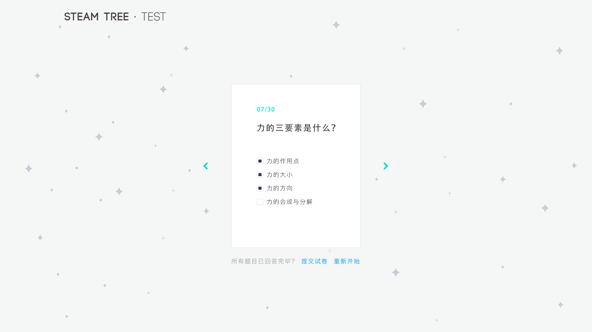

What is STEAM?
Online studying is getting popular these days. However, they're not as attractive as the game we like playing. WHY IS THAT? We did a little research to find out. The most important thing is that students do not want to study because it is boring. What's more, the color and the special effects attract them a lot and they can get reward during playing which is not always happening in school. So in order to attract student to study, our team design this website with colors and some elements in the space. Next we design our subjects with short video in 3 minutes and 4-5 questions after the class. Every section is short so it can go on really fast to let students know they're making progressing. What's more, the videos are made with animation because it is more interesting than facing with a teacher. As for the reward, we set medals for different mission done. Since this website can be connect with the school system, teachers in school can also give students gifts if they do well on the website.
Homepage
We borrow some elements from space to design our homepage. You can see it below.
Let's move on to the process
First thought
At very first, we plan to design our homepage as a big tree, a Fairy Vine, more specifically. It can grow very tall and each branch is a knowledge point. However, what if students want to have a overall look of what he has done. Then we change our design and set the homepage.
Below is a drawing made by me to illustrate the process we discuss about homepage.
Why planet stands for subjects?
We call our website 'steam tree' because we think our knowledge is like a growing tree —— We study lots of basic knowledge first and than we can move on to some difficult area to further our study. Since there are connections between every subjects, we can describe knowledge as a wood, then forest, and then it can be a planet —— subjects planet. Teachers always told us that in elementary and junior school, the most important part of studying is to lay the solid foundation. What's more, we always write a sentence in our writing homework to express our feeling when we are studying —— I seem to be traveling in the universe of knowledge. So knowledge planet can be used in this website when we design our subjects and the connections.
Planet
We use different color and various elements to design our subject planet in order to attract students. It maybe not concise or too colorful for an adult, but students between 6-15 is our aimed user. The elements on the planet can move, such as shaking or whirling.
Trees
Inner of our planet
After clicking the planet, we will enter the 'tree' part. We imagine our planets are planted with knowledge trees. You can click the leaves to enter a section including video and homework.
Study section
Video
We design our studying video no more than 4 minutes in order to let students focus in a short time and the video is like an animation which is attractive to young students.
Small test
After every video, there will be a test with no more than 5 questions. If you complete the test with no fault, you will have a further test which is more difficult or a reward. If you have 2 wrong answer, then you have to go back to the video part to learn again.
